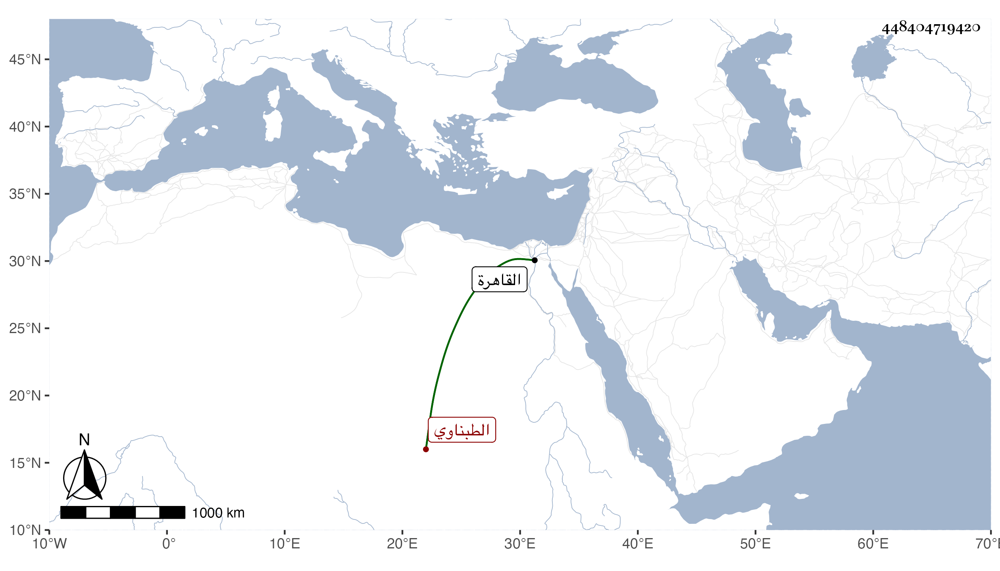

0902Sakhawi.DawLamic.ITO20230111-ara1.EIS1600.448404719420
Biography ID: 448404719420
719
محمد بن عمر بن محمد ناصر الدين بن ركن الدين الطبناوي بفتح المهملة والموحدة وتخفيف النون نسبة لطبنا ومن عمل سخا . ذكره شيخنا في إنبائه فقال ذكر لي أنه ولد سنة ثلاث وخمسين وسبعمائة وكان أبوه مدركا يقال له ركن الدين فنشأ ابنه في محبة الفقراء وخدمتهم حتى تقدم فيهم بل صار مطاعا عند الأمراء والأكابر وقام في سنة أربعين بهدم الدير المعروف بالمغطس فاتفق تخذيل السلطان عن الأمر بذلك بعد أن كان أذعن له واقتصر على الأمر بغلقه ثم قدر الله أنه أمر بهدمه في التي بعدها فبادر الشيخ وأعوانه لذلك . ومات في آخر السنة ، قال وكان على طريقة حسنة من العبادة والتوجه والرغبة في الخير وله أتباع وقد قدم القاهرة مرارا وآخر اجتماعي به في أول ذي الحجة من سنة وفاته وذكروا لي أن والدته كانت من الصالحات ويؤثر عنها كرامات ولها شهرة في تلك البلاد . قلت قد أفرد مناقبها تلميذه وبلديه النور الطبناوي الماضي واسمها ست البنين ، وبلغنا أن صاحب الترجمة كان يقدم القاهرة للاشتغال وأنه في بعض قدماته تخيل في أثناء سفره من تعبث بعضهم في غيبته بزوجته ولم ينفك هذا الوارد عنه وإنه بمجرد اجتماعه بشيخه البدر الزركشي قال له ابتداء طب نفسا وقر عينا فإنه لا يسقي زرعك غير مائك فانبسط حينئذ وزال الوارد رحمهم الله وإيانا .
